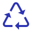

A tecnologia que pretendemos utilizar
Inovações para Salvar os Recifes
Tecnologia para preservar o Ecossistema Marinho
Principais Tecnologias Utilizadas
Python
Nosso projeto irá propor um sistema de reciclagem inteligente nas praias, incentivando a coleta de materiais recicláveis através de uma aplicação interativa. Os usuários podem adicionar materiais a um carrinho de reciclagem virtual, acumulando pontos que podem ser trocados por benefícios, como vouchers de refeição e compras, promovendo a preservação das regiões costeiras e dos ecossistemas marinhos.
Edge Computing
Nosso protótipo tecnológico de monitoramento (utilizando o Arduino R3, protoboard e alguns sensores), desenvolvido em C++, será fundamental para coletar e analisar os dados referentes à qualidade de água em áreas costeiras e oceânicas, verificar a temperatura da água e o ph, permitindo uma resposta rápida e eficaz para controlar e evitar eventuais problemas.

Clean Ocean - Global Solution - @Todos os direitos reservados